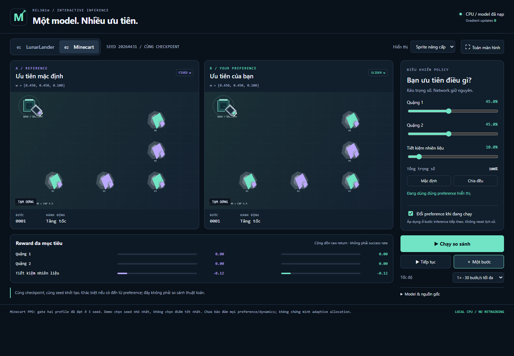
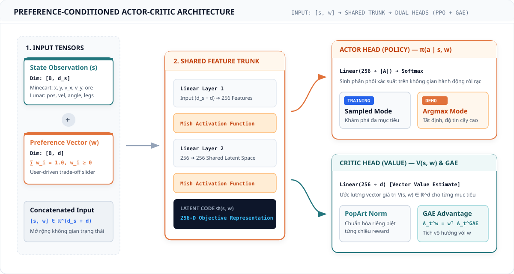
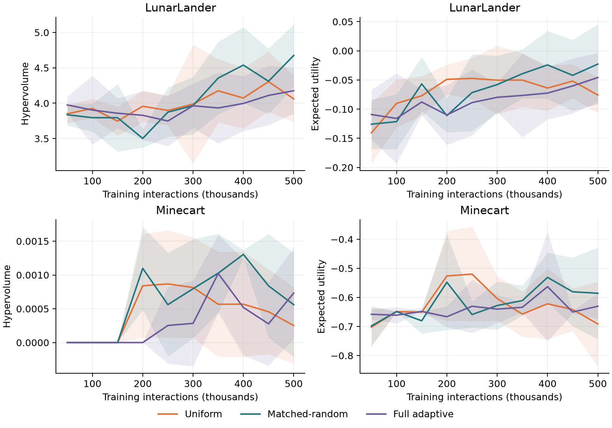
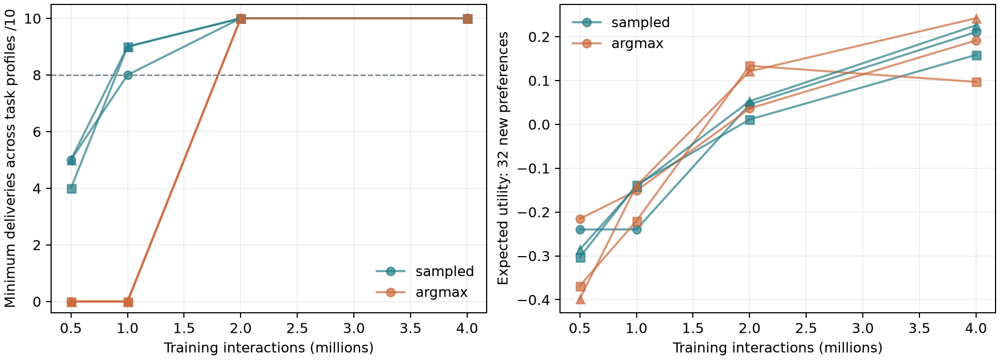
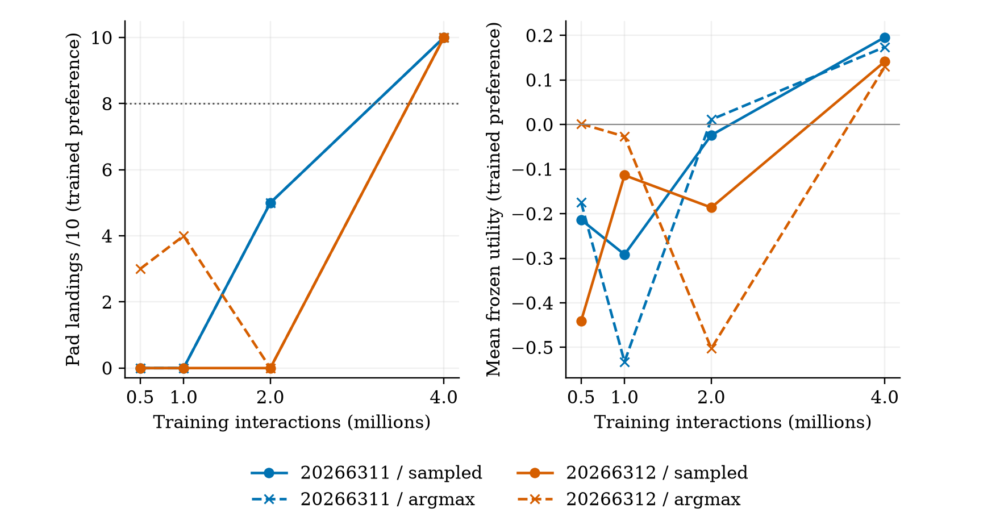
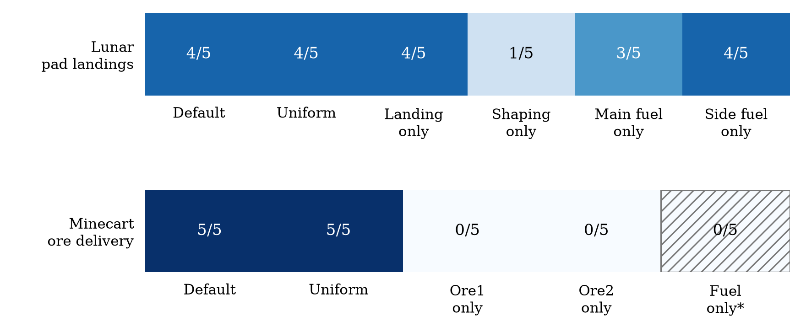
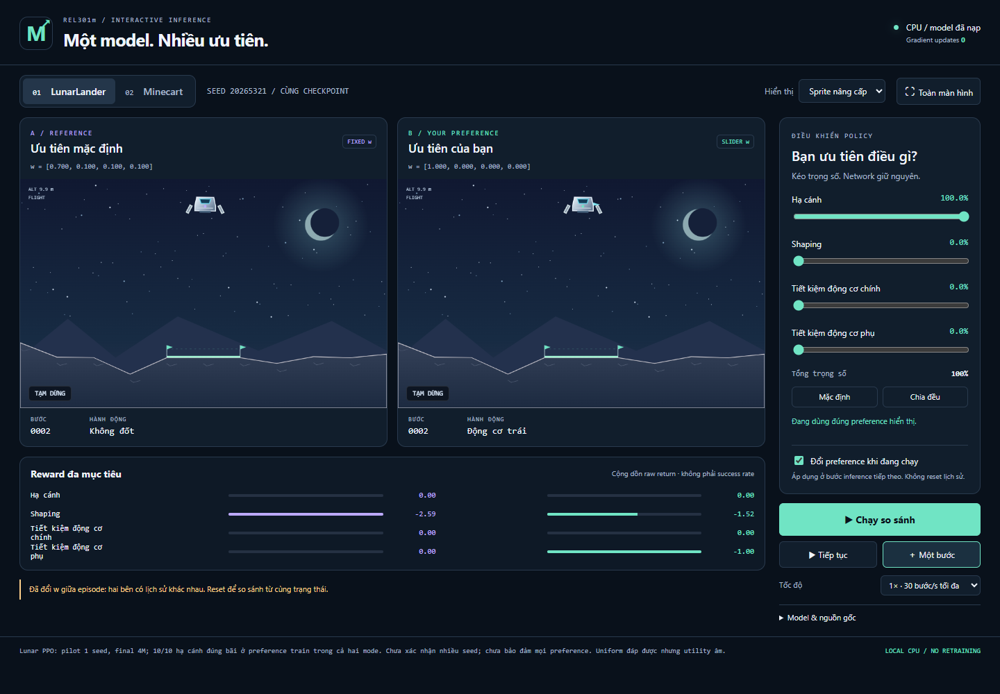

Học tăng cường đa mục tiêu có điều kiện hóa sở thích: giải quyết đánh đổi đa chiều bằng duy nhất một mô hình Actor-Critic trên hai môi trường benchmark Minecart và Lunar Lander.
Dẫn nhập vấn đề • Trình diễn Web Demo thời gian thực
Mô hình hóa toán học • Kiến trúc mạng PPO Actor-Critic
Thực nghiệm đối chứng (DQN) • Độ nhạy & Phản biện Q&A
RL kinh điển chỉ tối ưu 1 con số điểm thưởng duy nhất ($r \in \mathbb{R}$). Mục tiêu thực tế luôn xung đột: tàu vũ trụ vừa muốn đáp nhanh vừa muốn tiết kiệm xăng; xe mỏ vừa muốn đào nhiều quặng vừa muốn giảm hao mòn ray.
Cách tiếp cận cũ gán cứng trọng số trước khi train. Mỗi khi người dùng đổi ưu tiên, kỹ sư phải huấn luyện lại từ đầu một mạng neural mới — lãng phí hàng tuần tính toán GPU.
Liệu có thể huấn luyện DUY NHẤT MỘT agent thích ứng tức thời (<2ms) ngay khi người dùng kéo slider thay đổi sở thích $\mathbf{w}$?

Mở rộng MDP truyền thống thành MOMDP: phần thưởng mỗi bước là một vector $d$ chiều ứng với $d$ mục tiêu độc lập của môi trường.
Người dùng phân bổ mức ưu tiên $\mathbf{w}$ cho từng mục tiêu (tổng = 100%). Điểm thỏa mãn chung (Utility) là tổng điểm các mục tiêu sau khi nhân với trọng số tương ứng.
Thay vì train nhiều mô hình cho từng $\mathbf{w}$, nhóm điều kiện hóa trực tiếp vector $\mathbf{w}$ vào đầu vào mạng: $\pi_\theta$ suy luận hành vi theo sở thích tức thời.
Mục tiêu tổng thể: tìm bộ tham số $\theta$ tối đa hóa kỳ vọng Utility trên toàn bộ phân phối sở thích $\mathcal{D}$, bao phủ mặt biên Pareto.


30 jobs huấn luyện độc lập, 28.800 validation episodes. Kết quả: Minecart đạt 0 QUẶNG suốt toàn bộ thử nghiệm!
Chuỗi hành động đào quặng và mang về bãi quá dài trong không gian thưởng thưa. Q-learning bias nặng vào mục tiêu tiết kiệm xăng $\to$ agent đứng yên hoặc lùi xe.
Nhóm giữ nguyên toàn bộ số liệu làm Failure Analysis — hiểu rõ nguyên nhân thất bại là bằng chứng học thuật đắt giá nhất trước hội đồng.


"Muốn đánh giá phân bổ trọng số, policy trước hết phải biết làm nhiệm vụ!" Nhóm chuyển sang on-policy PPO + GAE + PopArt.
Cả 3 seed độc lập vượt task gate ở cả chế độ Sampled và Argmax, giải quyết triệt để điểm nghẽn của Q-learning.
Đạt 10/10 lần hạ cánh native +100 chính xác vào tâm bãi cờ, chứng minh năng lực kiểm soát đa mục tiêu.

Đánh giá độ ổn định của actor argmax trên 55 episodes với vector trọng số từ mặc định, đồng đều đến cực hạn.
Lunar Lander đạt 4/5 lần đáp bãi; Minecart đạt 5/5 lượt giao quặng với trọng số mặc định và đồng đều.
Khi ép trọng số 100% vào tiết kiệm nhiên liệu, agent chấp nhận không giao quặng để tối đa hóa Utility người dùng — hoàn toàn đúng toán học.
Chạy trực tiếp từ checkpoint PPO 4M bước đã kiểm toán. Không dùng video quay sẵn; mọi bước đi tính toán cục bộ qua localhost:8765.
Người dùng thay đổi vector $\mathbf{w}$ trực tiếp: so sánh song song Panel Trái (ưu tiên đáp êm) $\leftrightarrow$ Panel Phải (ưu tiên tiết kiệm xăng).
Tải xuống toàn bộ tọa độ, vận tốc, phân phối xác suất hành động và điểm thưởng từng bước theo thời gian thực.
Tàu kích hoạt động cơ chính liên tục để hãm tốc độ rơi, cân bằng 2 chân tiếp đất tuyệt đối êm ái vào chính giữa cờ.
Tàu chấp nhận rơi tự do với vận tốc lớn hơn, chỉ kích hoạt động cơ ở giây cuối cùng trước khi chạm đất nhằm đốt ít nhiên liệu nhất.
Mạng neural không học vẹt một quỹ đạo cố định mà thực sự hiểu vector sở thích $\mathbf{w}$ được truyền vào đầu vào.

Framework thực nghiệm MORL tự động với provenance JSON receipts đầy đủ, phân tách rạch ròi ngân sách train / validation / final-test.
Chỉ rõ bản chất toán học vì sao Q-learning (PCQN) thất bại trên horizon dài (Credit Assignment), làm luận cứ vững chắc cho bước chuyển sang PPO.
Sản phẩm demo trực quan hóa thời gian thực chạy trực tiếp trên checkpoint PPO 4M bước đã kiểm toán, xuất trace JSON minh bạch.
Đồ án chưa chứng minh phân bổ adaptive vượt trội hơn uniform trên mọi miền preference; final-test gốc vẫn được khóa chặt, không dùng để cherry-pick checkpoint.
Mở rộng Conditioned Policy sang không gian hành động liên tục (Continuous Control), tích hợp Pareto-front multi-policy và tự động thích ứng trọng số theo ngữ cảnh người dùng.
PCQN Baseline: Dynamic Weights Conditioned DQN. Bế tắc trên Minecart do lỗi gán tín dụng (0 quặng / 28.800 eps).
Envelope Q-Learning: lý thuyết bao lồi Pareto trong MORL. Tắc nghẽn tương tự khi reward thưa, horizon dài.
Population-based: huấn luyện cả quần thể nhiều mô hình, tốn kém GPU, không suy diễn thời gian thực được.
PPO + GAE: Clipped surrogate objective và Generalized Advantage Estimation — thuật toán nền của backbone nhóm.
Backbone PPO: Categorical PPO với PopArt vector critic trên stochastic Minecart — nền tảng nhóm kế thừa.
PopArt chuẩn hóa thang đo mục tiêu; MO-Gymnasium cung cấp benchmark Minecart và Lunar Lander đa mục tiêu.
PCQN và Envelope Q-learning gặp lỗi Credit Assignment trên Minecart $\to$ Nhóm giải quyết: on-policy PPO với GAE + PopArt, đạt 10/10 quặng ở cả 3 seeds độc lập.
Các nghiên cứu trước vội tối ưu preference khi agent chưa làm được việc cơ bản $\to$ Nhóm đề xuất: quy tắc bắt buộc policy vượt Task Competence Gate 10/10 trước khi đánh giá phân bổ sở thích.
PGMORL phải train cả quần thể nhiều mô hình rời rạc tốn kém $\to$ Nhóm chứng minh: duy nhất 1 mạng neural với Shared Trunk đáp ứng mọi sở thích tức thời, độ trễ suy diễn <2ms.
Trân trọng cảm ơn Thầy và các bạn đã lắng nghe!
Nhóm em rất mong nhận được câu hỏi và góp ý từ hội đồng về
mô hình Preference-Conditioned MORL này.